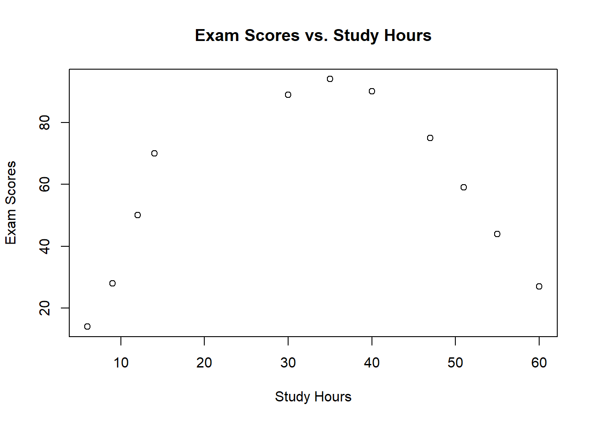
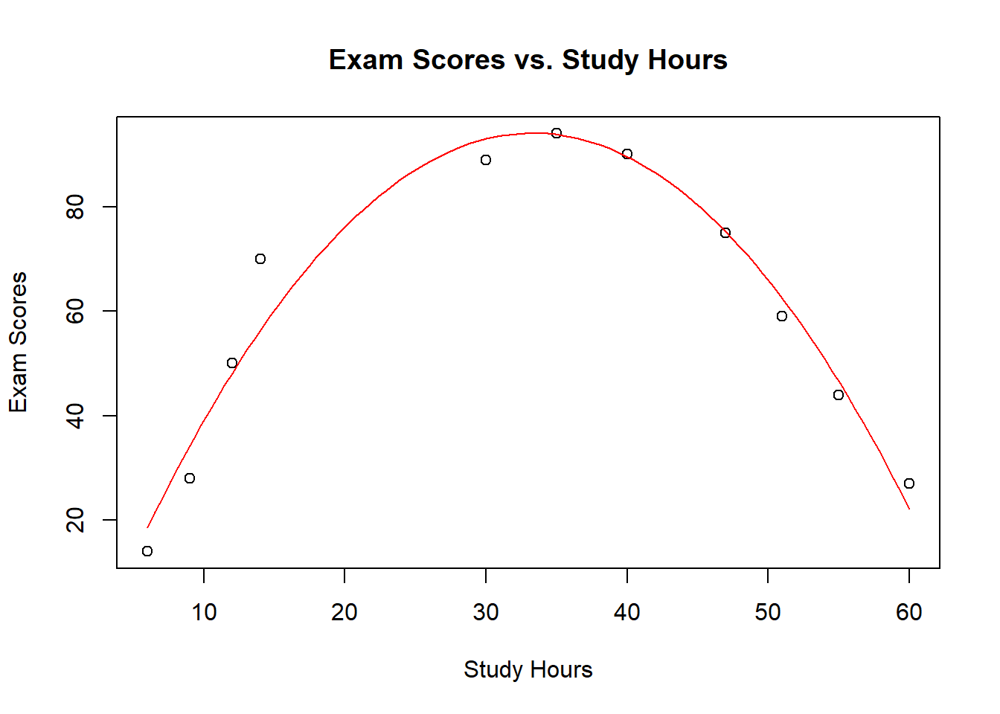

Quadratic Regression in R: Unveiling Non-Linear Relationships
rtip
regression
Author
Steven P. Sanderson II, MPH
Published
November 17, 2023
Introduction
In the realm of data analysis, quadratic regression emerges as a powerful tool for uncovering the hidden patterns within datasets that exhibit non-linear relationships. Unlike its linear counterpart, quadratic regression ventures beyond straight lines, gracefully capturing curved relationships between variables. This makes it an essential technique for understanding a wide range of phenomena, from predicting stock prices to modeling population growth.
Embark on a journey into the world of quadratic regression using the versatile R programming language. We’ll explore the steps involved in fitting a quadratic model, interpreting its parameters, and visualizing the results. Along the way, you’ll gain hands-on experience with this valuable technique, enabling you to tackle your own data analysis challenges with confidence.
Setting the Stage: Data Preparation
Before embarking on our quadratic regression adventure, let’s assemble our data. Suppose we’re investigating the relationship between study hours and exam scores. We’ve gathered data from a group of students, recording their study hours and corresponding exam scores.
# Create a data frame to store the datastudy_hours <-c(6, 9, 12, 14, 30, 35, 40, 47, 51, 55, 60)exam_scores <-c(14, 28, 50, 70, 89, 94, 90, 75, 59, 44, 27)data <-data.frame(study_hours, exam_scores)data
Visualizing the Relationship: A Scatterplot’s Revelation
To gain an initial impression of the relationship between study hours and exam scores, let’s create a scatterplot. This simple yet powerful visualization will reveal the underlying pattern in our data.
# Create a scatterplot of exam scores versus study hoursplot( data$study_hours, data$exam_scores, main ="Exam Scores vs. Study Hours", xlab ="Study Hours", ylab ="Exam Scores" )

Upon examining the scatterplot, a hint of a non-linear relationship emerges. The data points don’t fall along a straight line, suggesting a more complex association between study hours and exam scores. This is where quadratic regression steps in.
Fitting the Quadratic Model: Capturing the Curve
To capture the curvature evident in our data, we’ll employ the lm() function in R to fit a quadratic regression model. This model incorporates a second-degree term, allowing it to represent curved relationships between variables.
# Fit a quadratic regression model to the dataquadratic_model <-lm(exam_scores ~ study_hours +I(study_hours^2), data = data)
The I() function in the model formula ensures that the square of study hours is treated as a separate variable, enabling the model to capture the non-linearity.
Interpreting the Model: Unraveling the Parameters
Now that we’ve fitted the quadratic model, let’s delve into its parameters and understand their significance.
# Summarize the quadratic regression modelsummary(quadratic_model)
Call:
lm(formula = exam_scores ~ study_hours + I(study_hours^2), data = data)
Residuals:
Min 1Q Median 3Q Max
-6.2484 -3.7429 -0.1812 1.1464 13.6678
Coefficients:
Estimate Std. Error t value Pr(>|t|)
(Intercept) -18.25364 6.18507 -2.951 0.0184 *
study_hours 6.74436 0.48551 13.891 6.98e-07 ***
I(study_hours^2) -0.10120 0.00746 -13.565 8.38e-07 ***
---
Signif. codes: 0 '***' 0.001 '**' 0.01 '*' 0.05 '.' 0.1 ' ' 1
Residual standard error: 6.218 on 8 degrees of freedom
Multiple R-squared: 0.9602, Adjusted R-squared: 0.9502
F-statistic: 96.49 on 2 and 8 DF, p-value: 2.51e-06
The output of the summary function provides valuable insights into the model’s performance and the significance of its parameters. It indicates the intercept, representing the predicted exam score when study hours are zero, and the coefficients for the linear and quadratic terms.
Visualizing the Model: Bringing the Curve to Life
To fully appreciate the quadratic model’s ability to capture the non-linear relationship between study hours and exam scores, let’s visualize the model alongside the data points.
# Calculate the predicted exam scores for a range of study hourspredicted_scores <-predict( quadratic_model, newdata =data.frame(study_hours =seq(min(study_hours), max(study_hours), length.out =100 ) ) )# Plot the data points and the predicted scoresplot( data$study_hours, data$exam_scores, main ="Exam Scores vs. Study Hours", xlab ="Study Hours", ylab ="Exam Scores" )lines(seq(min(study_hours), max(study_hours), length.out =100), predicted_scores, col ="red" )

The resulting plot reveals the graceful curve of the quadratic model, fitting the data points closely. This visualization reinforces the model’s ability to capture the non-linear relationship between study hours and exam scores.
Your Turn: Embarking on Your Own Quadratic Regression Adventure
Armed with the knowledge and skills gained from this tutorial, you’re now ready to embark on your own quadratic regression adventures. Gather your data, fit the model, interpret the parameters, and visualize the results.